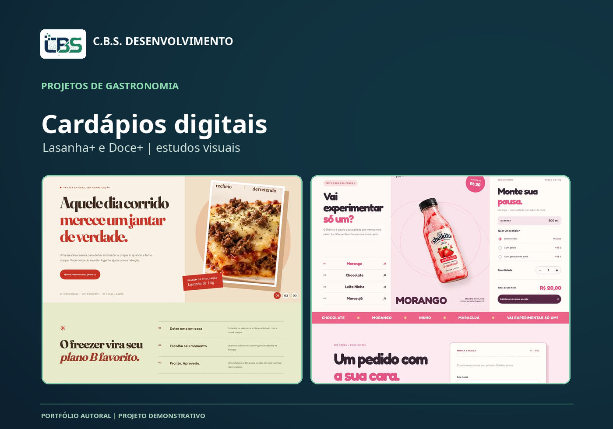

Vídeo · Motoquinha
Apresentação C.B.S. — Motoquinha
Motion graphics 720p, tela real do emulador QA e recursos ilustrados como conceitos.
Reunimos conteúdos demonstrativos reais: fotografias de produtos, projetos web, vídeos de apresentação e espaço para futuras peças com personagens virtuais gerados por IA.
Portfólio transparente: as mídias existentes abaixo são peças de conceito e trabalhos próprios. Vídeos com modelos virtuais de IA serão incluídos após produção e revisão, não são apresentados como trabalhos concluídos.
8 itens exibidos
Motion graphics 720p, tela real do emulador QA e recursos ilustrados como conceitos.
Vídeo vertical de produtos, sem áudio, elaborado com os conceitos Lasanha+ e Doce+. Não é campanha contratada.

Estudo visual de interface comercial responsiva.

Capa de portfólio com conceitos gastronômicos.

Conceito visual autoral para vitrine digital.

Conceito visual autoral para catálogo de sobremesas.
Área dedicada aos estudos de personagens e publicidade sintética, com processo e limites explicados.
Visão geral dos aplicativos e funcionalidades planejadas sem expor usuários, banco, chaves ou documentos.